Each of my sprites with its colours moved onto threadstead-44. Shapes are untouched: every colour is swapped for one in the nearest ramp, keeping the light-to-dark order. Nothing has been uploaded.
Two copies of each. remap-preview/<name>.png keeps the original canvas, so it can replace the live file today. remap-preview/trimmed/<name>.png also drops the empty rows under the sprite. Only upload the trimmed ones once the site reads sizes from the file (pipeline piece B). Until then the old size table would stretch them.
Same spots, before and after (after uses the trimmed copies).
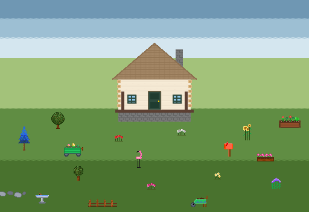
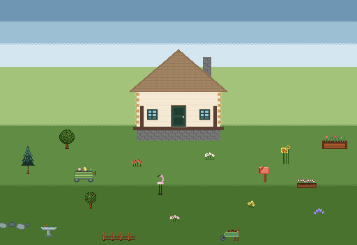
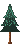
Blue to the pine ramp. The pine ramp has 3 greens, so the two darkest blue bands share the darkest pine and the tree reads as a dark conifer.
#1e3a8a → #1d3029#1e40af → #1d3029#224b3d → #1d3029#2563eb → #2e4b3f#278d6b → #4a957a#4a957a → #4a957a#6d4223 → #5c301b#8b4513 → #834a27#a86433 → #b05e2bAlready close: two near-identical greens merge and the trunk browns move to the wood ramp.
#1b350a → #1b350a#2d5016 → #2d5016#4b2306 → #3d2314#49722e → #49722e#546a22 → #49722e#5c2d0c → #5c301b#608d43 → #608d43#6a5422 → #834a27#8b4513 → #834a27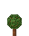
Same swaps as the oak.
#1b350a → #1b350a#2d5016 → #2d5016#4b2306 → #3d2314#49722e → #49722e#546a22 → #49722e#5c2d0c → #5c301b#608d43 → #608d43#6a5422 → #834a27#8b4513 → #834a27#2d5016 → #2d5016#4a5d23 → #49722e#4a7c59 → #608d43#7f1d1d → #7f1d1d#dc2626 → #c4473a#ef4444 → #e27d60The rose ramp jumps from a dark mauve straight to pale pink, so pink reads softer than before.
#2d5016 → #2d5016#4a5d23 → #49722e#4a7c59 → #608d43#9d174d → #8c4a5b#db2777 → #d9a9b5#f472b6 → #f4d6dc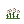
#2d5016 → #2d5016#4a5d23 → #49722e#4a7c59 → #608d43#887373 → #7a6c64#b9b3b3 → #d8cbbd#ffffff → #fffaf5#2d5016 → #2d5016#4a5d23 → #49722e#d97706 → #b05e2b#f59e0b → #b07d1a#fcd34d → #e8b730#fef3c7 → #f6e27f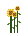
#2d5016 → #2d5016#5c9139 → #49722e#16a34a → #608d43#72501b → #834a27#c0720f → #b07d1a#c3821c → #b07d1a#fcd34d → #e8b730#ffe9a3 → #f6e27fPurples to the lavender ramp. The stems go one step darker than nearest so they don't vanish into the new grass.
#16a34a → #49722e#7c3aed → #5a4fb3#8b5cf6 → #8b7fe0#d09fff → #c0b7f9Cool Tailwind greys to slate.
#62646a → #3e4b4d#6b7280 → #5c6e70#9ca3af → #8fa0a0Greys to slate, the bright web blue water to the sky ramp.
#000000 → #2b2523#6b7280 → #5c6e70#689bee → #6f97b3#8b5a2b → #834a27#9ca3af → #8fa0a0#82b4f7 → #9dbfd3#a0522d → #b05e2b#c9cbcf → #c5d0cd#d1d5db → #c5d0cd#f59e0b → #e8b730#451a03 → #3d2314#92400e → #5c301b#7b4325 → #834a27#8b4513 → #834a27#b05e2b → #b05e2bHot pink to the rose ramp: a dustier flamingo. The black legs become ink.
#000000 → #2b2523#1a1a1a → #2b2523#ff69b4 → #d9a9b5#ffb6c1 → #f4d6dc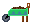
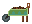
#000000 → #2b2523#4b2409 → #3d2314#374151 → #3e4b4d#3d8a95 → #4a957a#6a3008 → #5c301b#6b7280 → #5c6e70#22c55e → #608d43#6e482e → #834a27#8b4513 → #834a27#4ade80 → #a3c27aWeb reds (tomato, orange-red) to the red ramp.
#723305 → #5c301b#a70000 → #7f1d1d#b93200 → #7f1d1d#8b4513 → #834a27#b97240 → #b05e2b#f20707 → #c4473a#ff4500 → #c4473a#ff6347 → #e27d60#fb7962 → #f2a58e#fb9999 → #f2a58e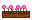
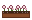
Deep pink flowers to the rose ramp; two of the wood browns merge.
#15803d → #2d5016#4f2e17 → #3d2314#228b22 → #49722e#582603 → #5c301b#72533d → #7a6c64#803602 → #834a27#8b4513 → #834a27#ff1493 → #8c4a5b#ff69b4 → #d9a9b5#ed9bc4 → #f4d6dc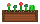
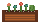
#27543a → #2e4b3f#3d2314 → #3d2314#228b22 → #49722e#2e8b57 → #4a957a#5c301b → #5c301b#654321 → #5c301b#32cd32 → #608d43#834a27 → #834a27#67ed67 → #a3c27a#9e8373 → #a8998e#a0522d → #b05e2b#dc2626 → #c4473a#ed6464 → #e27d60#ef4444 → #e27d60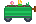
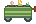
16 colours down to 14. The green body gets lighter stripes.
#374151 → #3e4b4d#15803d → #49722e#228b22 → #49722e#5d4037 → #4a403d#2e8b57 → #4a957a#5c2701 → #5c301b#4b5563 → #5c6e70#16a34a → #608d43#806962 → #7a6c64#8b4513 → #834a27#6b7280 → #8fa0a0#22c55e → #a3c27a#32cd32 → #a3c27a#f472b6 → #d9a9b5#fbbf24 → #e8b730#f6e7c1 → #ffe7cfMagenta hat to the rose ramp, so it goes pale. If you'd rather keep a bold hat, red is the other option.
#000000 → #2b2523#4a5d23 → #2d5016#b61d95 → #8c4a5b#f3e8ff → #d8cbbd#ff00c8 → #d9a9b5#f97316 → #e27d60#fbbf24 → #e8b730#f3f4f6 → #fffaf5#2d5016 → #2d5016#4a5d23 → #49722e#f59e0b → #e8b730#fcd34d → #f6e27f#f9fafb → #fffaf5#ffffff → #fffaf5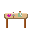
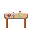
#886e4b → #7a6c64#8b4513 → #834a27#d318aa → #8c4a5b#9a9a9a → #8fa0a0#8fbc8f → #a3c27a#9e5e30 → #b05e2b#deb887 → #e1b489#f6d9b2 → #f2c6a0#ffe4e1 → #f4d6dc